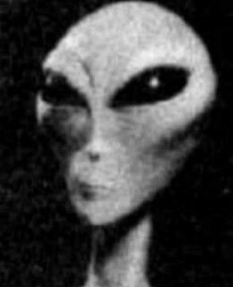
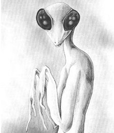
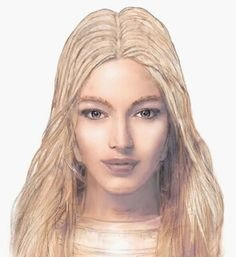
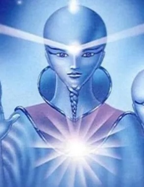
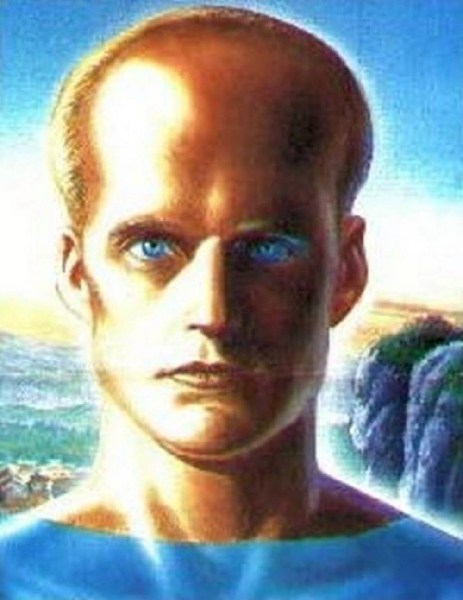

| Alfa Centauri |
Aspecto estilizado no corpóreo |
Indefinido. Cuerpo no físico |
Transmisores de conocimiento |
Alfa Centauri |
 |
| Andromedano |
Aspecto estilizado no corpóreo |
Indefinida |
Bondadosa, sabia y espiritual |
Galaxia Andrómeda |
 |
| Arcturiano |
Indefinido. Sin cuerpos físicos |
Altos y luminosos |
Benevolentes,sanadores y guías |
Constelación Bootes |
 |
| Gris bajo |
Pequeños con grandes ojos negros |
0.90m a 1.60m |
Abductores,experimentación |
Zeta Reticuli |
 |
| Gris alto |
Grises altos y delgados |
1.80m |
Abductores,experimentación |
Zeta Reticuli |
 |
| Insectoide |
Semejantes a mantis |
2m estatura |
Abductores, experimentación |
Galaxia del sombrero |
 |
| Lyriano |
Humanoide/rostro de mamífero |
Variado |
Difusores del conocimiento |
Constelación Lyra |
 |
| Pleyadiano |
Humanoide nórdico |
1.80-2m |
Ayudantes y liberadores del hombre |
Cúmulo Pléyades |
 |
| Reptiliano |
Rasgos de reptil humanoide |
1.90-3m |
Agresiva, violenta y malintencionada |
Alpha Centauri |
 |
| Siriano |
Humanoides |
Semejante a humana |
Sanadores y protectores naturaleza |
Sistema Sirio |
 |
| Tau Cetiano |
Humanoides |
1.50-1.90m |
Aliados contra entidades perniciosas |
Sistema Tau Ceti |
 |
| Ummita |
Humanoides aspecto nórdico |
1.80-2m |
Promoción ciencia y espiritualidad |
Estrella Wolf 424 |
 |